프로필·회원정보부터 티켓 원장(적립 / 사용 / 교환 / 환수)의 영구 조회, CMS 운영 화면까지 — 실제 배포본 화면 캡처 기반
app/index.html · cms/index.html 배포본(pricepick-demo.vercel.app)에서 직접 조작 후 캡처 (2026.07.09) · 목업/와이어프레임 없음
이 문서의 모든 화면은 배포본에서 게스트 계정(닉네임 마이스토리)을 실제로 생성하고, 경유 구매 2건(쿠팡 67,000원 · 11번가 12,000원) → CMS 구매확정 → 기프티콘 교환 2건 → CMS 환불 처리 → CMS 수동 지급까지 전부 실행한 뒤 캡처한 스크린샷입니다. 그림으로 대체한 화면은 없습니다.
적립일 + 365일
등급 티켓 유효기간 (만료 D-30 · D-7 알림)
미사용분만 회수
확정 후 환불 시 — 이미 쓴 티켓은 회수하지 않음
원장 불변
거래 기록은 삭제 없이 추가만 (환수도 새 기록)
연동 = 서버 영구 보존
미연동 게스트는 기기 보존 (재설치 시 초기화)
1
유저
마이페이지 — 프로필 · 회원정보 · 메뉴
하단 탭 '마이'로 진입. 상단 프로필(닉네임 + 가입 N일째), 회원정보(닉네임 / 카카오 연동 / 초대코드 입력), 활동(내 티켓·기프티콘 / 활동 내역 / 구매 내역), 도움말, 시스템(계정 탈퇴) 순으로 구성된다. 미연동 게스트에게는 카카오 연동하기 버튼이 노출된다.
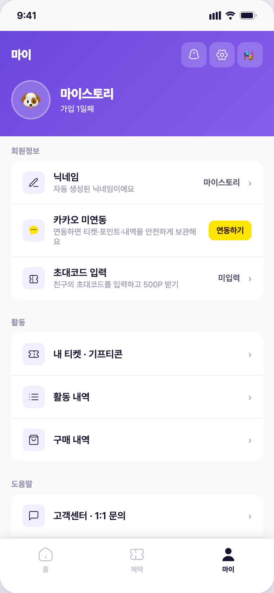
마이페이지 상단 · 프로필 + 회원정보 + 활동 메뉴
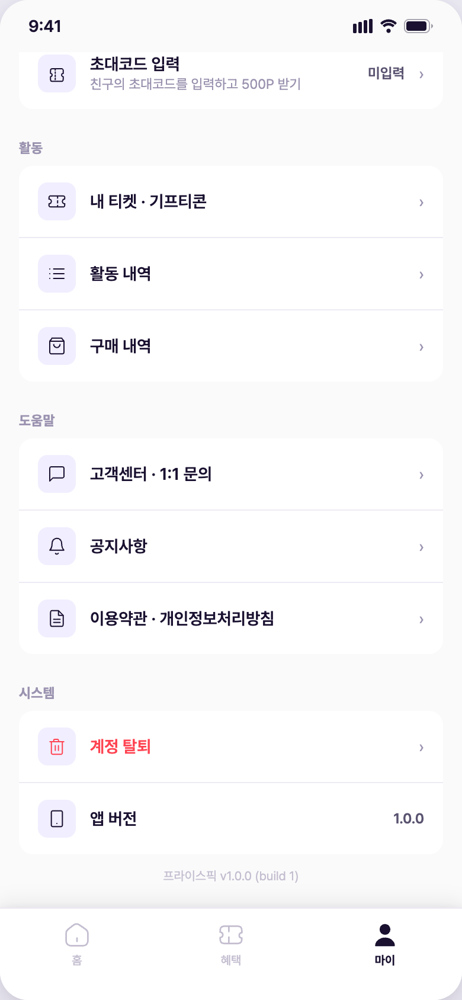
마이페이지 하단 · 도움말 + 시스템(계정 탈퇴)
2
유저
닉네임 변경 — 중복 검사 실동작
회원정보의 '닉네임' 행에서 진입. 저장 시 users.nickname 중복 검사가 실제로 동작하며, 이미 사용 중인 닉네임이면 인라인 에러로 저장이 차단된다. 입력 규칙은 2~10자.
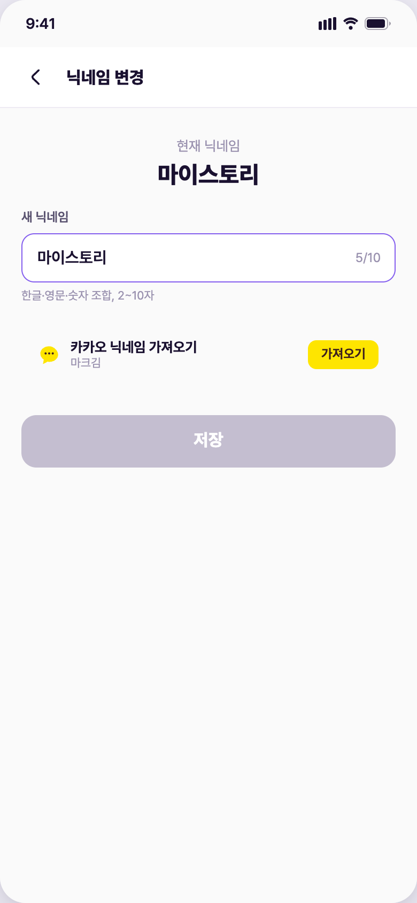
닉네임 변경 · 현재 닉네임 채워진 상태
닉네임 2~10자 규칙은 화면 문구로만 존재하고 마스터 정책서 본문에는 없다 — 하단 '미결·확인 필요' 6번 참조.
3
유저
활동 내역 — 구조 (필터 7종 · 월별 그룹 · 영구 조회)
마이 > 활동 > '활동 내역'으로 진입. 상단 필터 7종(전체 / 적립 / 사용 / 교환 / 환수 / 응모 / 만료), 리스트는 YYYY년 M월 월별 그룹 헤더로 묶여 최신순으로 표시된다. 하단에 "영구 조회 · 탈퇴 전까지 모든 이력 보존" 고정 문구. 가입 직후에는 빈 상태 안내가 노출된다.
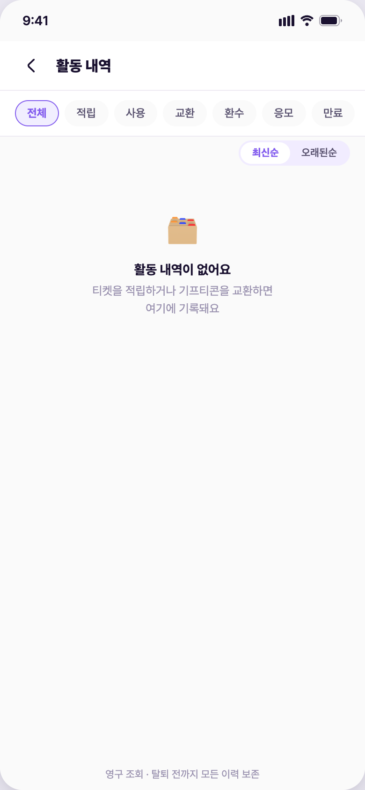
가입 직후 빈 상태 · 필터 7종 + 정렬 토글 + 영구 조회 문구
4
적립 발생
경유 구매 → 랜덤 티켓 가지급 = '적립' 기록
쇼핑몰 경유 구매가 발생하면 구매 즉시 랜덤 티켓(가지급)이 지급되고, 이 시점에 원장(ticket_transactions)에 earn 기록이 등급별 장수만큼 남는다. 확정 전까지 실제 등급(브론즈/실버/골드)은 비공개.
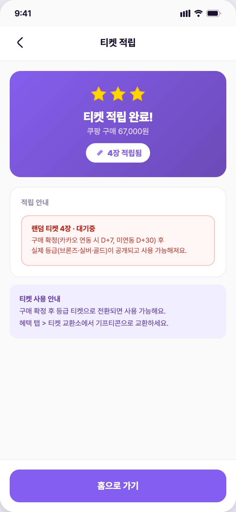
쿠팡 67,000원 구매 직후 · 랜덤 티켓 4장 대기중 (등급 비공개)
5
CMS 운영자
구매확정 처리 — 가지급 → 등급 티켓 전환
확정(연동 D+7 / 미연동 D+30)은 앱이 스스로 하지 않고 CMS에서 포스트백 상태를 '대기 → 확정'으로 바꿔야 처리된다. 확정은 기존 티켓 문서의 상태만 바꾸며(수량 증가 없음), 원장에 새 기록을 만들지 않는다.
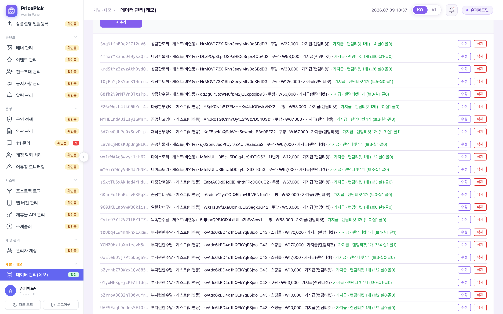
CMS > 포스트백 목록 · 마이스토리 2건 "가지급(랜덤티켓)" 상태
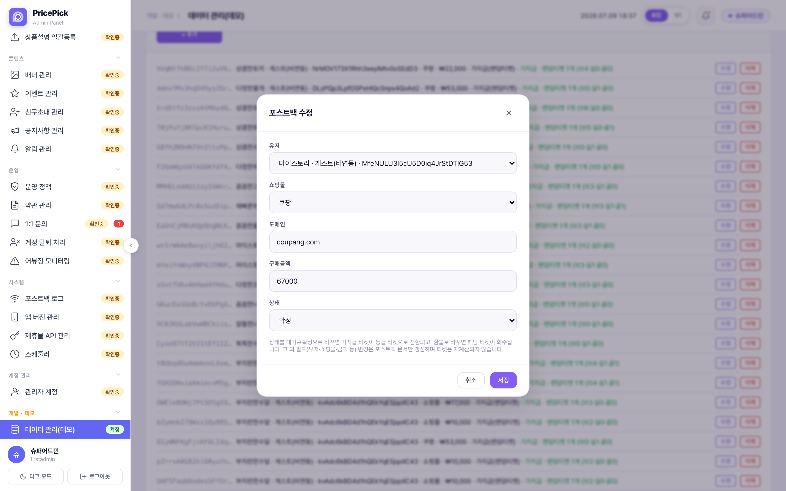
포스트백 수정 모달 · 상태 '확정' 선택 (전환·회수 규칙 안내 문구 포함)
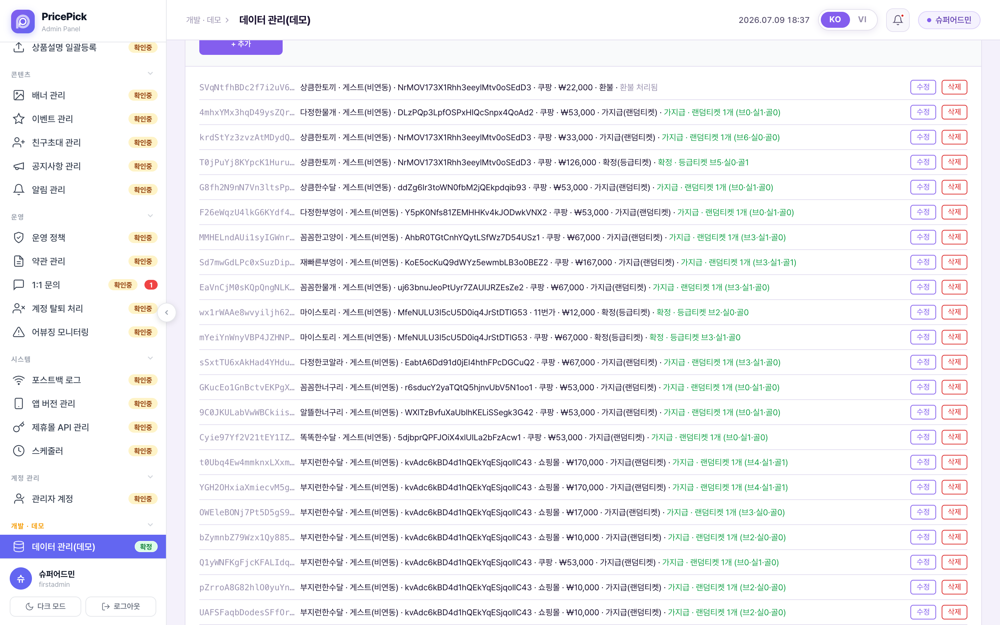
저장 후 · "확정(등급티켓) 브3·실1·골0 / 브2·실0·골0" 반영
6
유저
기프티콘 교환 = '사용' 기록
혜택 > 티켓 교환소에서 상품 교환 시 필요 등급 티켓이 차감되고, 원장에 사용(use) 기록과 교환 이력(gifticon_exchanges)이 남는다. 차감 미리보기("2장 차감 → 잔여 N장")가 상세 화면에 표시된다.
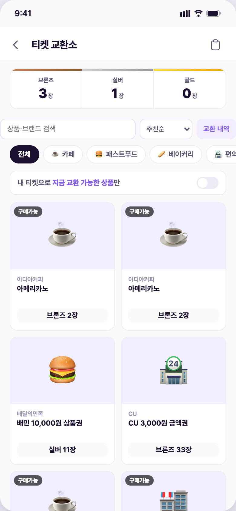
티켓 교환소 · 보유 티켓 기준 "구매가능" 표시
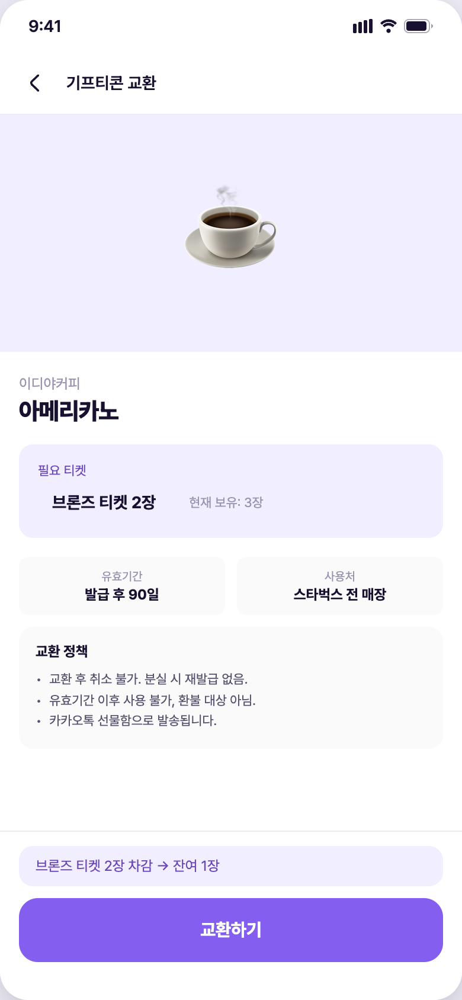
상세 · "브론즈 티켓 2장 차감 → 잔여 1장" + 교환 정책
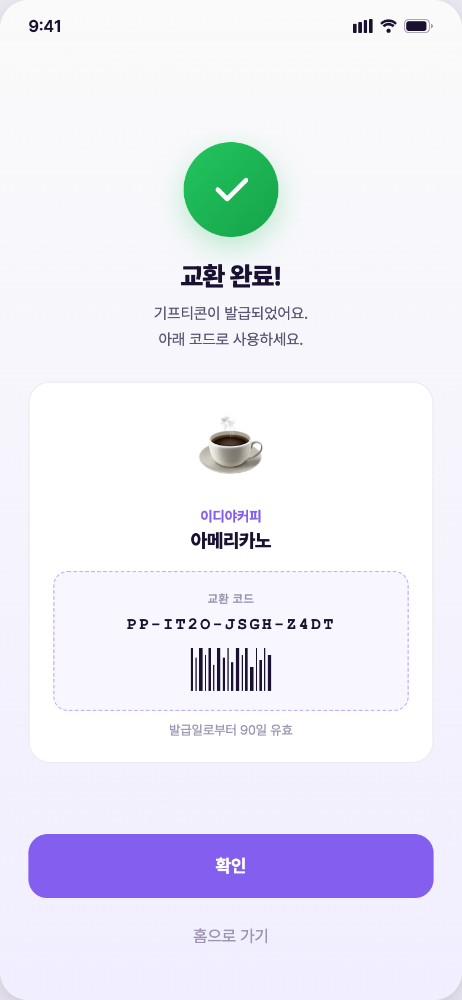
교환 완료 · 카카오톡 선물함 발송 안내
7
CMS 운영자
환불 처리 = '환수' 기록 — 미사용분만 회수
CMS에서 포스트백 상태를 '환불'로 바꾸면 그 구매건에 걸린 티켓이 회수(status: revoked)되고 원장에 환수(clawback) 기록이 추가된다. 이번 검증에서 11번가 건(브론즈 2장 적립)은 1장이 이미 기프티콘 교환에 사용된 상태였고, 환불 처리 결과 미사용 1장만 환수됐다("티켓 1장 환수" 토스트) — 정책서 t8 "이미 쓴 티켓은 회수하지 않음(잔액 마이너스 방지)"과 일치.
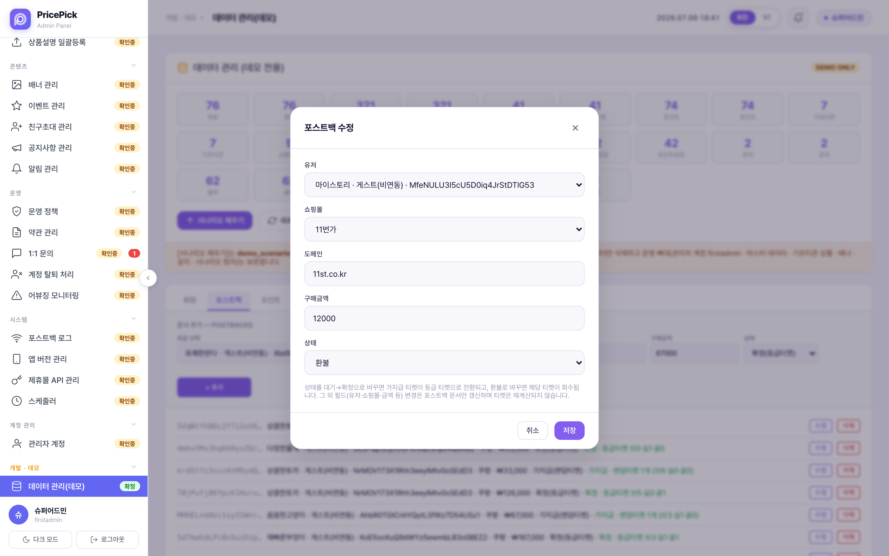
포스트백 수정 모달 · 상태 '환불' 선택 → 저장 시 해당 건 티켓 회수
정책서 기준 확정 전 환불은 "자동 취소(기록만)"인데, 데모 구현은 가지급/확정 구분 없이 동일하게 환수(clawback) 기록을 남긴다(코드 주석에 "간단화" 명시). 문서화 시 구분 필요 — '미결·확인 필요' 참조.
8
CMS 운영자
수동 지급 / 회수 — CS 보완 · 운영 조정
CMS > 티켓 내역의 '수동 지급 / 회수'로 특정 회원에게 등급별 티켓을 지급(earn)하거나 회수(clawback)할 수 있다. 사유 입력이 필수이며 처리 내역은 관리자 로그(admin_logs)에 남는다. 회수는 보유 활성 티켓에서 오래된 순(FIFO)으로 차감. 포스트백 미수신 시 CS가 영수증 인증 확인 후 수동 보완 지급하는 정책(t8)의 실행 창구다.
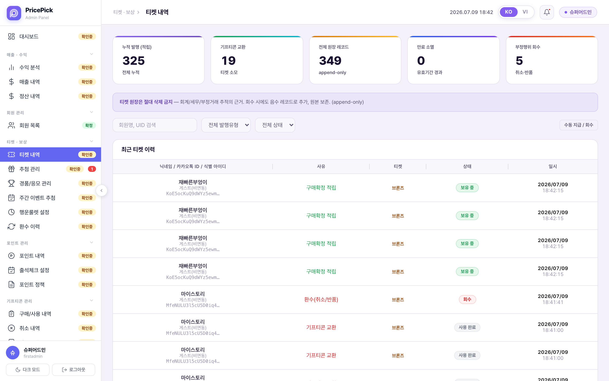
CMS > 티켓 내역 · 우상단 '수동 지급 / 회수' 버튼
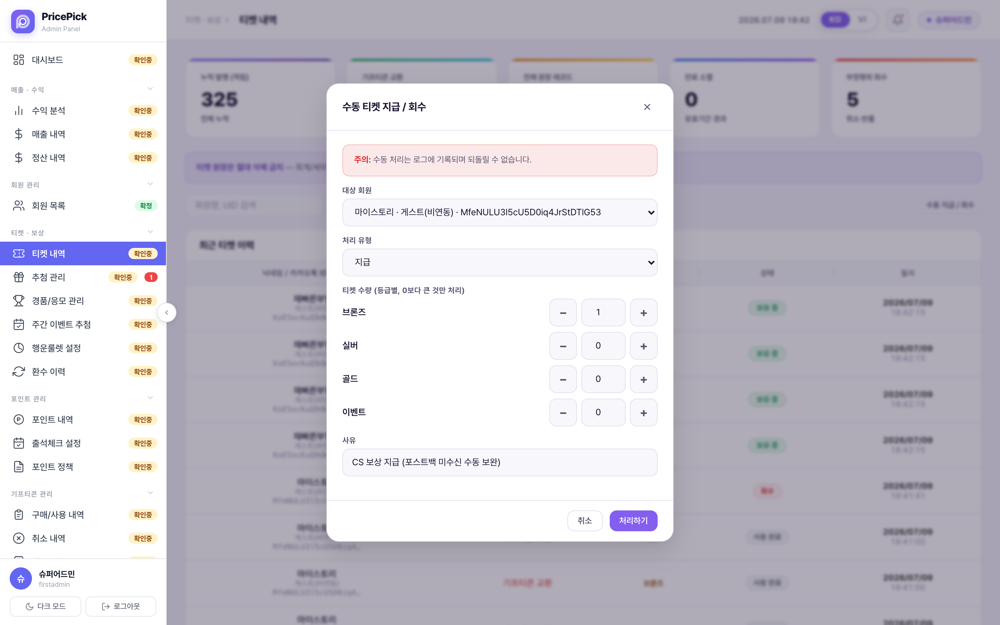
수동 지급 모달 · 대상 회원 + 처리유형 + 등급별 수량 + 사유(필수) — 실제 브론즈 1장 지급 실행
9
유저
활동 내역 — 전체 원장이 쌓인 모습
위 1~8 실행 후의 활동 내역. 적립(+1장, 초록) / 사용(-1장, 보라) / 환수(-1장, 빨강) / 포인트(+100P)가 월별 그룹 아래 최신순으로 쌓인다. 원장 3개(ticket_transactions + gifticon_exchanges + point_transactions)를 병합해 렌더링한다.
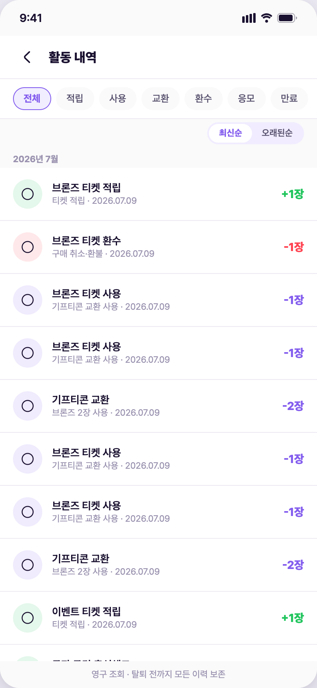
전체 필터 · 2026년 7월 그룹 아래 적립/사용/환수/포인트 16행
캡처에서 확인된 버그: 기프티콘 교환 1건(브론즈 2장)이 "브론즈 티켓 사용 -1장" 2행 + "기프티콘 교환 -2장" 1행 = 3행으로 중복 표기된다. 실제 차감은 2장인데 화면상 -4장처럼 보임 — '미결·확인 필요' 1번.
10
유저
필터별 조회 — 적립 / 사용 / 환수 / 응모 / 교환
필터 pill을 누르면 해당 유형만 남는다. 아래는 같은 계정에서 필터만 바꿔 캡처한 결과.
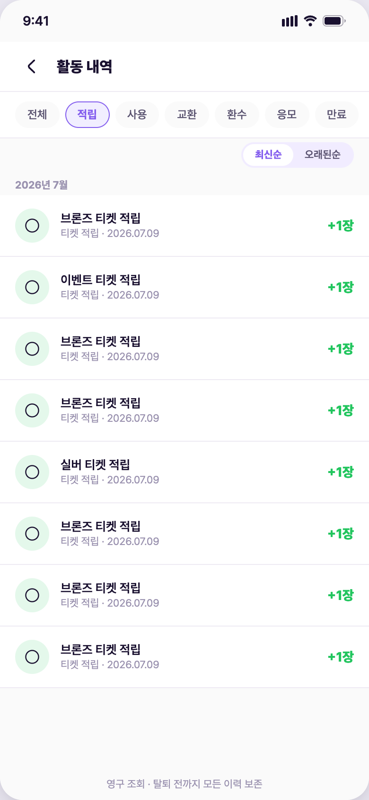
적립 · 구매 6장 + 온보딩 이벤트 1장 + 수동 지급 1장
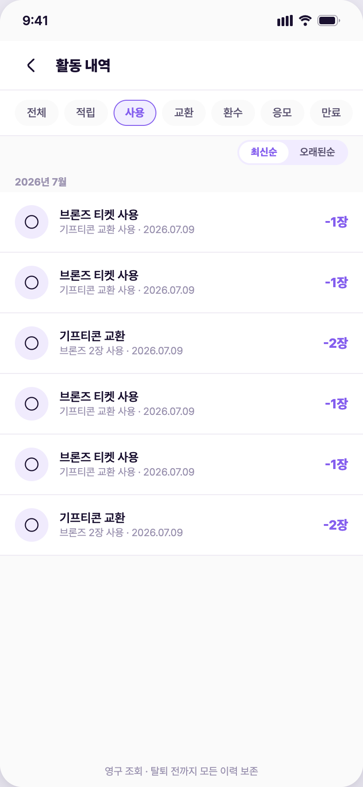
사용 · 기프티콘 교환 차감 기록
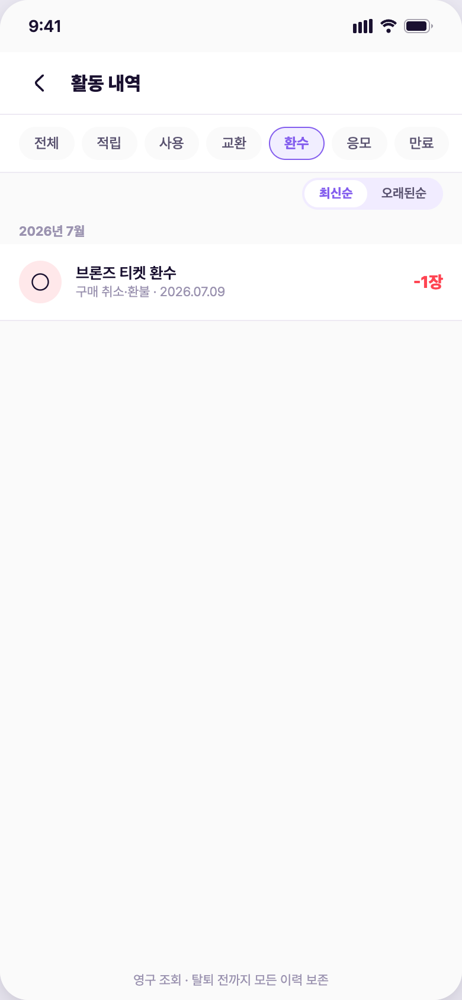
환수 · "구매 취소·환불 -1장"
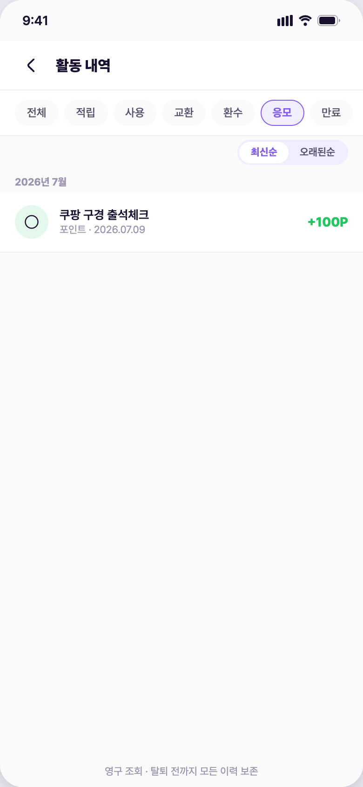
응모 · 포인트 기록(+100P)이 이 필터로 분류됨
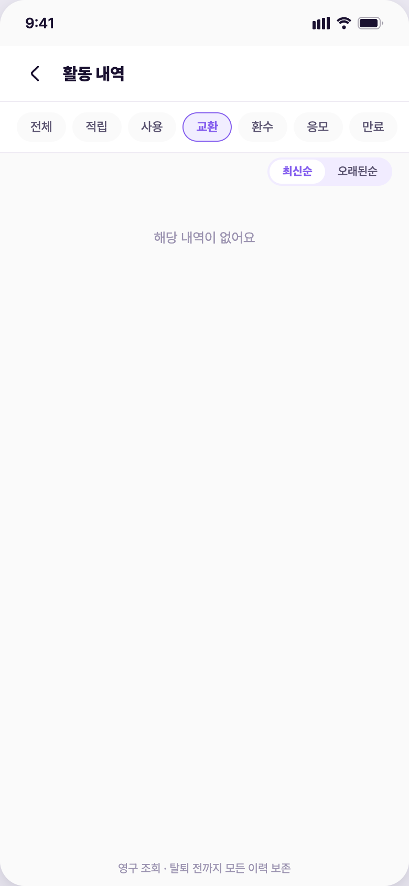
교환 · 항상 빈 상태 ("해당 내역이 없어요")
'교환' 필터를 채우는 기록 생성 흐름이 현재 앱·CMS 어디에도 없고(등급 교환 화면은 UI만, 확정 전환은 원장 기록 없음), 포인트가 '응모' 필터로 분류되는 것도 라벨과 어긋난다 — '미결·확인 필요' 2·3번.
11
유저
활동 섹션의 나머지 진입점 — 내 티켓 · 구매 내역
활동 내역과 나란히 배치된 두 화면. '내 티켓·기프티콘'은 보유 현황(잔액) 중심, '구매 내역'은 포스트백(주문) 단위 상태 중심이라 원장(활동 내역)과 관점이 다르다. 구매 내역에는 환불 완료 / 구매확정 상태가 그대로 반영된다.
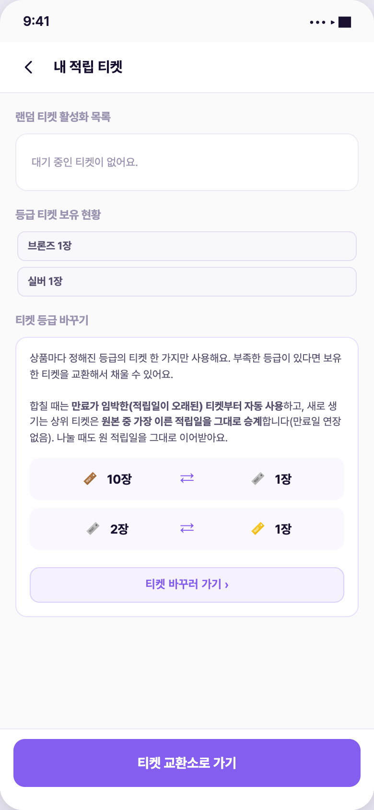
내 티켓·기프티콘 · 보유 잔액 + 대기/완료 목록
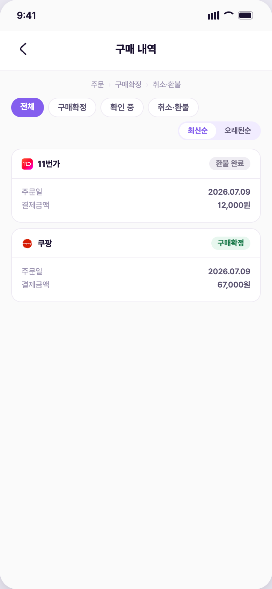
구매 내역 · 11번가 "환불 완료" / 쿠팡 "구매확정"
12
CMS 운영자
운영 조회 화면 — 환수 이력 · 포인트 내역 · 회원 상세
유저 활동내역의 운영자 측 대응 화면. 환수 이력은 원장의 clawback·expire 기록을 등급·사유·기간으로 필터해 집계하고, 회원 상세는 티켓 보유현황(등급별 합산)을 실집계로 보여준다.
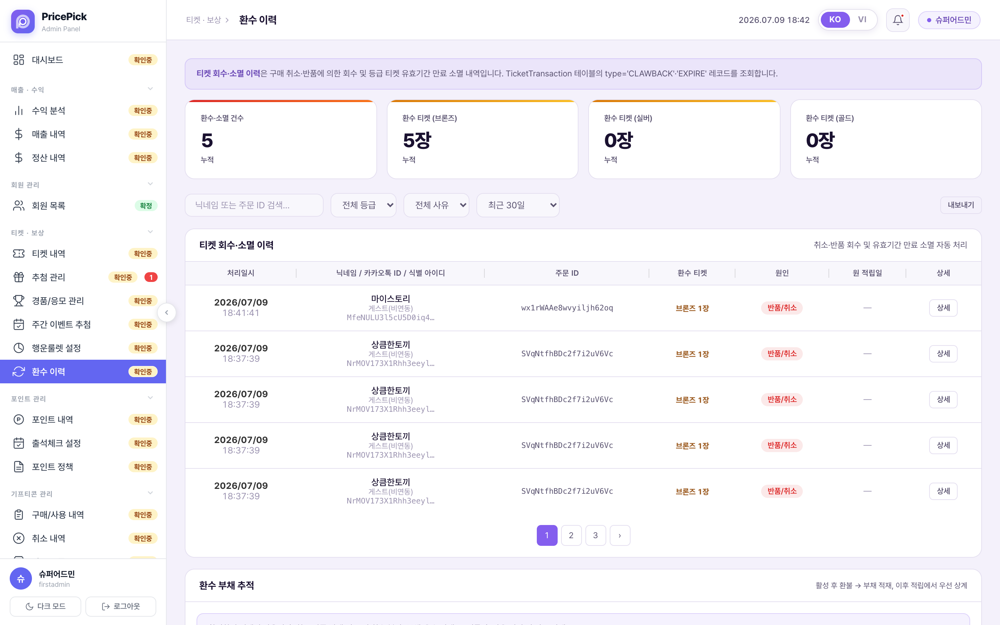
CMS > 환수 이력 · 마이스토리 "브론즈 1장 · 반품/취소" 최상단 기록
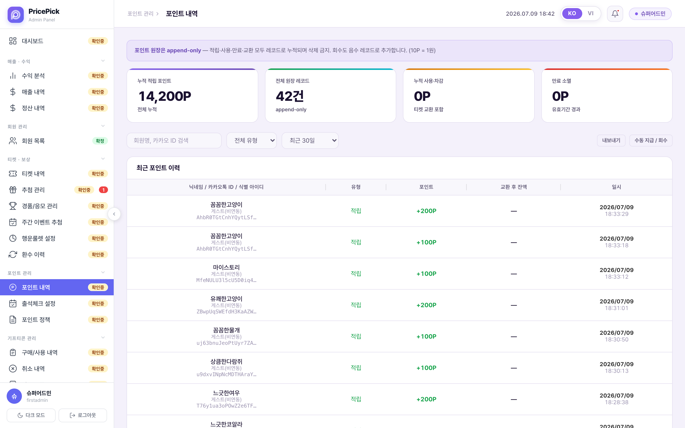
CMS > 포인트 내역
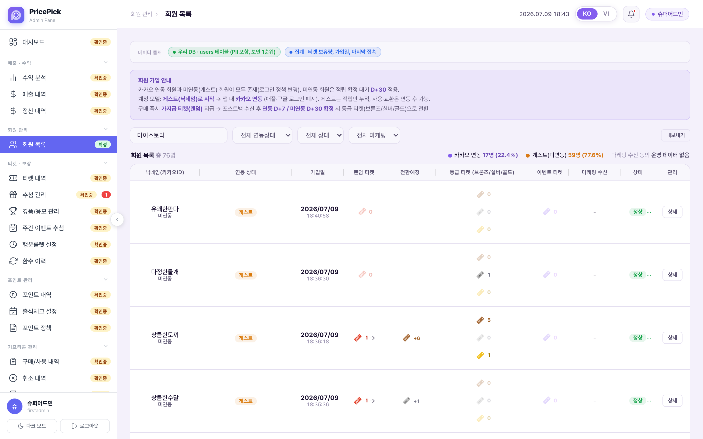
CMS > 회원 목록 · 닉네임 검색 "마이스토리"
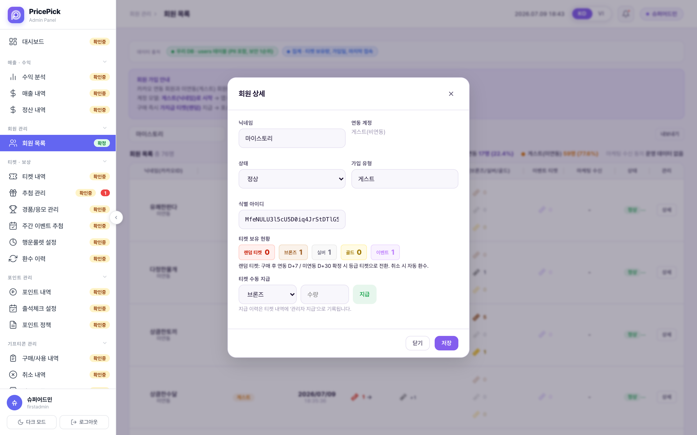
회원 상세 · 티켓 보유현황 실집계 (개별 이력 리스트는 없음 — 미결 8번)
정책 · 규칙 (마스터 정책서 policyspec.html 기준)
활동내역이 다루는 원장의 정책 근거. SoT는 마스터 정책서이며, 아래 표의 "화면 문구만" 표시는 정책서 본문에 정식 서술이 없다는 뜻이다.
"영구 조회" 앱 문구 ↔ SoT 불일치 (SoT 정정 대상) — 정책서(t11 데이터 보존)는 이미 명확하다: 연동 계정만 서버 영구 보존, 미연동 게스트는 기기 보존(재설치 시 초기화). 앱의 "영구 조회 · 탈퇴 전까지 모든 이력 보존" 문구는 이 구분 없이 전체를 영구인 것처럼 표시한다. 정책 자체는 확정돼 있으므로 형님 결정 불요 — 앱 문구를 "연동 계정 기준 영구 보존"으로 정정 필요(개발 이관 시 반영).
닉네임 2~10자 규칙 정책 부재 — 화면 문구로만 존재. 프로필·회원정보 영역 전반이 정책서에 정식 섹션 없음.
수동 회수도 "구매 취소·환불"로 표기 — 활동내역이 clawback 사유를 구분하지 않아 운영자 수동 회수까지 구매 환불로 보인다. 사유 필드 노출 여부 결정 필요.
CMS 회원 상세에 활동 이력 없음 — 등급별 티켓 합산만 있고 회원 단위 활동내역/포인트 이력 조회가 없다. 운영 필요 시 추가 대상.
확정 전 환불의 데모 단순화 — 정책서는 "확정 전 = 자동 취소(기록만)"인데 데모는 가지급/확정 구분 없이 동일하게 환수 처리한다(코드 주석 명시). 개발 이관 시 구분 구현 필요.